MethodThis device is compatible with ASTM D 1068 , D 1688 & D 1886
UseThe device is used to measure the trace element in wastewater, brackish water according to environmental low limits.
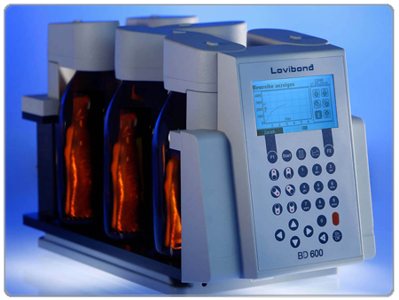
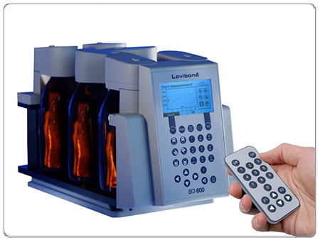
B.O.D Device
ModelLovibond BD600
MethodThis device is compatible with B.O.D Trak
UseThe device is for determining the biological oxygen demand in wastewater.
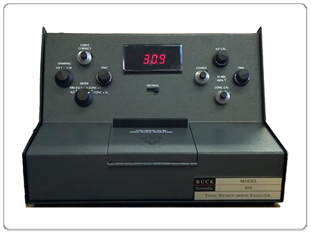
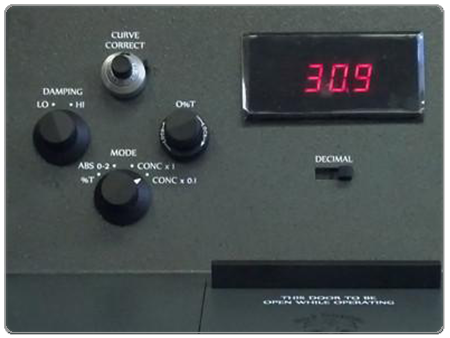
Oil Content ir Spectroscopy
ModelBuck
MethodThis device is compatible with ASTM D 3921
UseThe device is for determining the concentration of total hydrocarbons in wastewater.
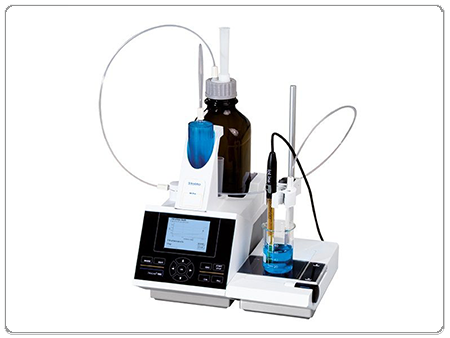
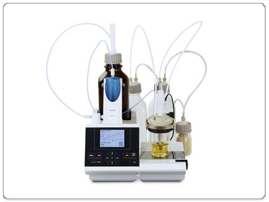
Potentiometer Device
ModelTitroline 7000
MethodThis device is compatible with ASTM D 664 & D 4739 & UOP 304
UseThe device is for the determination of the total acid number, base number, and bromine number in petroleum products and solvents.
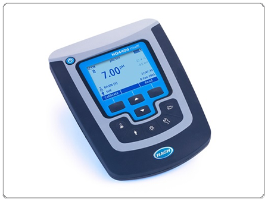
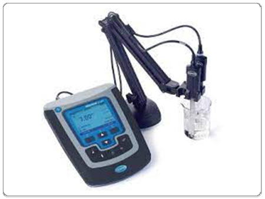
Conductivity Meter
ModelHACH ( HQ 430 d )
MethodThis device is compatible with ASTM D 1125
UseThe device is for the determination of the Conductivity, PH, T.D.S in the wastewater.
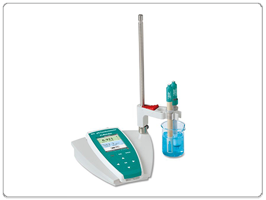
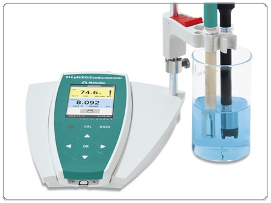
PH / Conductometer Device
ModelMetrom 914
MethodThis device is compatible with ASTM D 1293.
UseThe device is for determining the PH and conductivity of Unite Boilers.
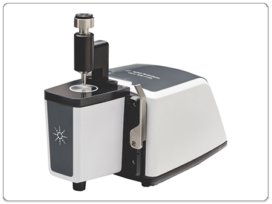
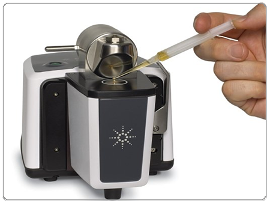
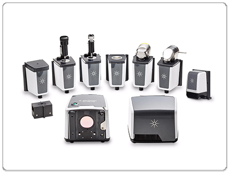
FTIR Spectroscopy
ModelCARY 630
MethodThis device is compatible with ASTM D 3414 & D3921
UseThe device is for determination the petroleum hydrocarbon in water and comparison between petroleum products.
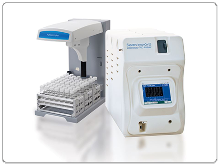
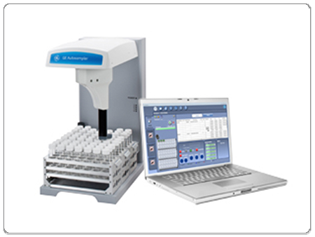
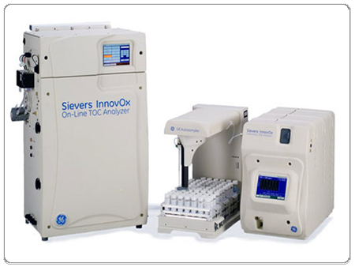
TOC Analyzer
ModelSIEVERS INNOVOX SERIES
MethodThis device is compatible with EPA Method 415.1.
UseThe device is for determination the total organic carbon in abroad range of water samples from industrial process water to wastewater influent & effluent to concentrated brine in chemical applications .